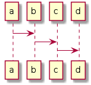

1. GitHub Actions を使った sphinx + plantuml の構築について
¶
1.1. 本文書の目的
¶
システムの設計文書を書くときに、構造的な文書を書くのと、plantumlによる図の支援が 欲しいので簡単に利用できるテンプレートを作った。

gh-pages with sphinx and GHA
ナビゲーション
Contents:
1. GitHub Actions を使った sphinx + plantuml の構築について
1.1. 本文書の目的
Related Topics
Documentation overview
Previous:
Welcome to gh-pages with sphinx and GH#'s documentation!
クイック検索